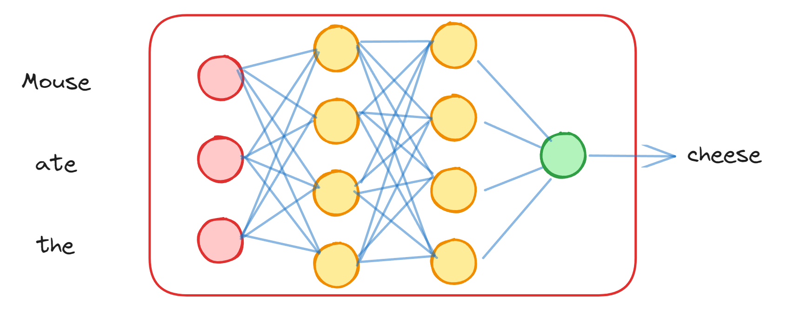
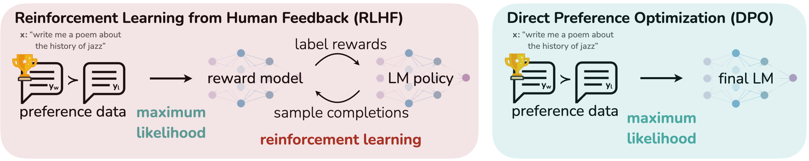
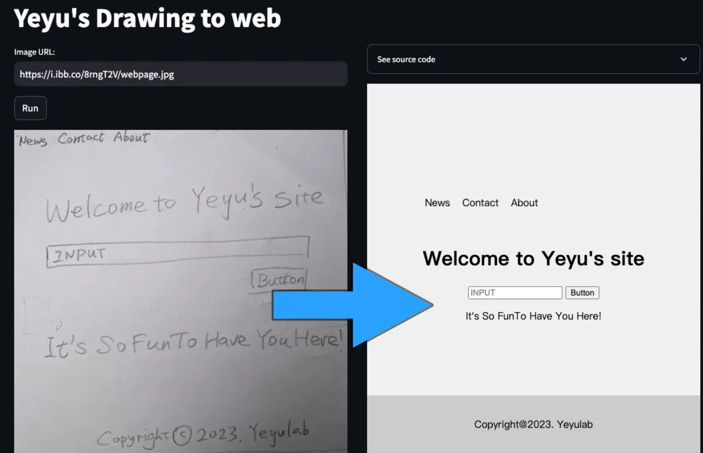
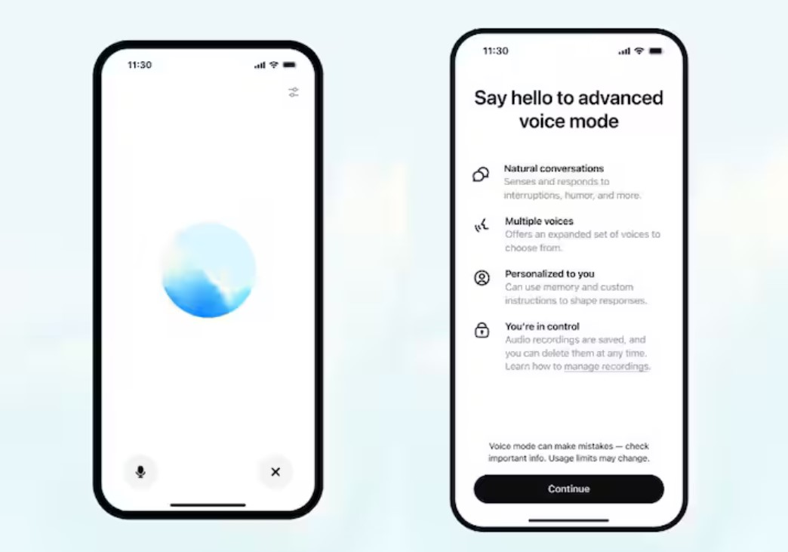
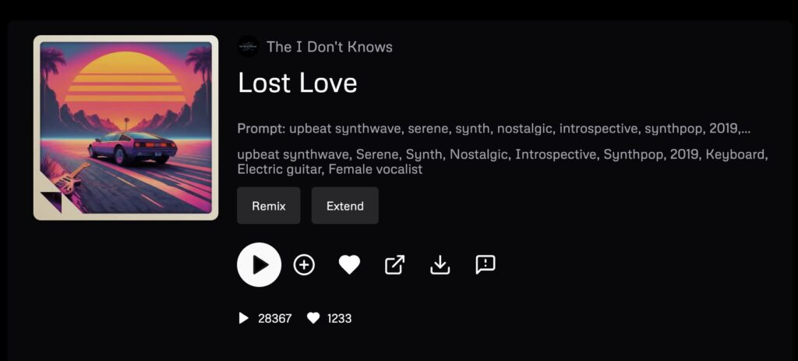
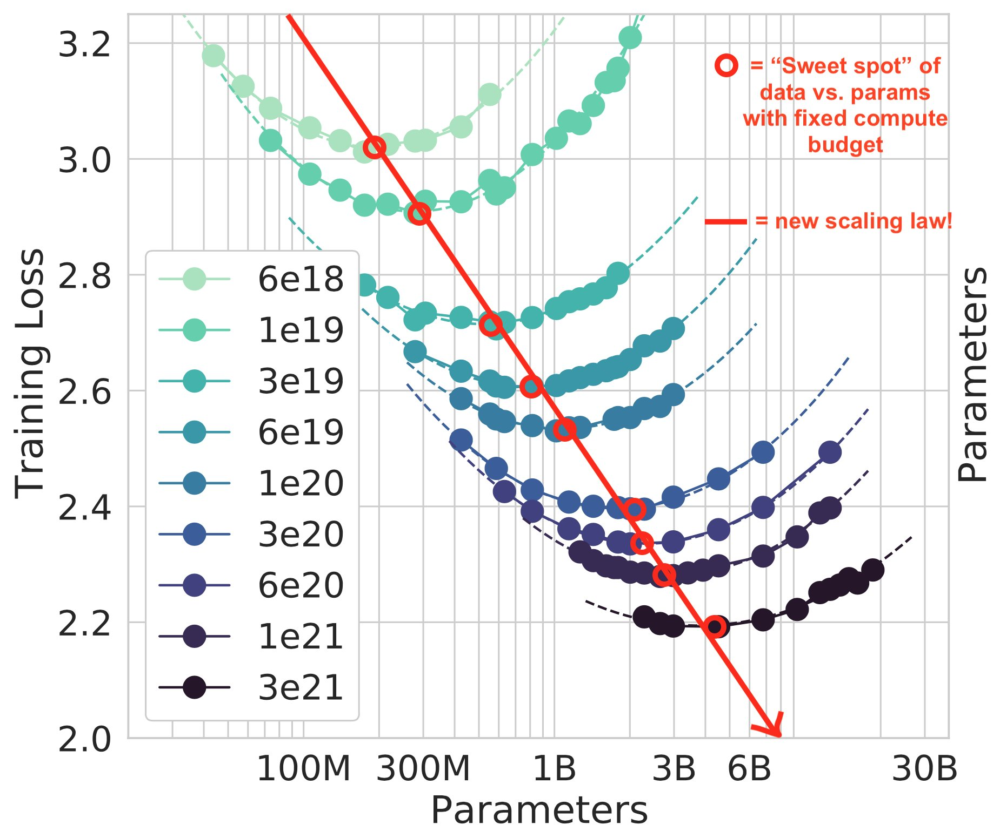

Hitchikers Guide to Large Language Models
Who is this for?
Who is this for?

What is a Large Language Model?
LLMs are merely models that predict next word in a sequence
LLMs are a proxy model of the real world
LLM
Language
World
By learning and modelling language, LLMs can understand and model the world.
How to train your dragon model?
- Borrow few 100 million dollars
- Download all of internet (250B pages; >1PB of data)
- Train for 2-3 months on several thousand GPUs
Training costs big bucks

Typical composition of Training data

What is in a trained model?

But Pre-training is Just the Beginning

Training Chat assistants

Supervised Fine-tuning

Reinforcement Learning from Human Feedback (RLHF)
How Does a Model Predict the Next Word?


How to use Large Language Models
Selecting a model: Proprietary

Inspecting a model: Open Source
{
"architectures": [
"MistralForCausalLM"
],
"attention_dropout": 0.0,
"bos_token_id": 1,
"eos_token_id": 2,
"hidden_act": "silu",
"hidden_size": 4096,
"initializer_range": 0.02,
"intermediate_size": 14336,
"max_position_embeddings": 32768,
"model_type": "mistral",
"num_attention_heads": 32,
"num_hidden_layers": 32,
"num_key_value_heads": 8,
"rms_norm_eps": 1e-05,
"rope_theta": 1000000.0,
"sliding_window": null,
"tie_word_embeddings": false,
"torch_dtype": "bfloat16",
"transformers_version": "4.42.0.dev0",
"use_cache": true,
"vocab_size": 32768
}
Example API request to OpenAI
from openai import OpenAI
client = OpenAI()
completion = client.chat.completions.create(
model="gpt-3.5-turbo",
messages=[
{"role": "system", "content": "You are a helpful assistant."},
{"role": "user", "content": "Hello!"}
],
temperature=0.7,
top_p=0.95, # use top_p or temp, not both
top_logprobs=3,
max_tokens=1000,
)
Example use of Mistral using Huggingface library
from transformers import AutoTokenizer, AutoModelForCausalLM
tokenizer = AutoTokenizer.from_pretrained("EleutherAI/gpt-neo-1.3B")
model = AutoModelForCausalLM.from_pretrained("EleutherAI/gpt-neo-1.3B")
inputs = tokenizer("Hello, my name is", return_tensors="pt")
# Similar settings to OpenAI's API
outputs = model.generate(
**inputs,
max_length=1000,
do_sample=True,
temperature=0.7,
top_p=0.95,
top_k=0,
num_return_sequences=1,
)
Knobs and controls of LLMs
Temperature controlling

Top-k sampling

Top-p sampling

Understanding Tokens
Tokens are the smallest units of text recognized by models.
1000 tokens ≈ 750 words
Models can only process a fixed context length measured in tokens.
Splitting text into tokens
It is raining
Character level tokenization
I
t
i
s
r
a
i
n
i
n
g
.
Sub-word level tokenization
It
is
rain
ing
.
Word level tokenization
It
is
raining
.
Addressing LLM Limitations
Characteristics of LLMs
- 🔄 Predicts next token stochastically
- 🧩 Coherent within fixed context length.
- 📖 Built-in Knowledge with a cut-off date
Retriever-augmented generation (RAG)

Tool Use

Deliberate problem solving using thoughts

Choosing the Right Large Language Model (LLM)
1. Understanding LLM Types
Pre-trained Models
- e.g., Llama 3, GPT Base
Instruct-Tuned Variants
- e.g., GPT-3.5-turbo, Llama-3.2-3B-Instruct
Coding Assistants
- Codestral, CodeLlama, Davinci Codex etc.
Mixture-of-Experts
- e.g., GPT-4, Mixtral
2. Evaluating LLM Performance
Evaluating LLMs is complex and multifaceted. There's no single perfect metric.
- Benchmarks: Task-specific, tricky broader applicability
- Human Evaluation: Inconsistent, challenging consensus
- Bot Evaluation: Not always aligned with human judgement
3. Practical Considerations
3.1 Licensing and Legal
- Commercial Services
- Regional availability
- Data Protection Compliance
- Open Weights
- Availability ≠ free use
- Verify licensing restrictions
3.2 Cost and Resource Requirements
Model size

More Params -> Expensive & Slower
Cost vs Performance

For common tasks, most models would do OK.
Context Length
 Models with larger context windows can handle longer conversations and docuemnts.
Models with larger context windows can handle longer conversations and docuemnts.
Self-Hosting

Upfront Investment in GPUs ≠ Cost Savings
The current state-of-play in AI

Open AI
Models:
- Pre-trained & Instruct-tuned: GPT3, GPT4, GPT 3.5 Turbo, GPT 4 Turbo
- Multi-modal & generation: GPT4 Vision, GPT4o, GPT4o-mini, Whisper, Suno, DALL-E 3
- Reasoning: o1, o1-mini
- 🤝 Strategic investment from Microsoft
- 🔧 Fine-tuning API offered
- 📞 Function calling, 📊 JSON mode, 💾 Context-caching (since Oct 2024)
Anthropic
Models:
Key features:
- Claude 3.0 Haiku, Sonnet, Opus
- Claude 3.5 Sonnet
- 👤 Founded by Dario Amodei (ex-VP of OpenAI)
- ⚡ Sonnet 3.5: Top performing model, comparable performance to GPT-4o
Models:
- Open Models: Gemma-1 (2B, 7B), Gemma-2 (2B, 9B, 27B)
- Proprietary Models: Gemini 1.5 (128B), Gemini 2 (540B)
- Gemma: Lightweight, strong open models; pre-trained on 2T-13T English tokens
- Gemini: Long context (2M tokens) & pioneered context caching
Alibaba Cloud
Model Series:
- Qwen, Qwen1.5, Qwen2, Qwen2.5 (0.5B - 110B)
- 📚 18T token pre-training
- 💡 Enhanced knowledge, coding & math skills
- 📄 8K+ token generation & structured data handling
Meta
Model Series:
- LLaMA: 7B-65B; LLaMA 2: 7B-70B; LLaMA 3/3.1/3.2: 8B-405B
- 🏆 Competitive with GPT-4, GPT-4o, Claude 3.5 Sonnet
- 📊 405B params, 15T tokens, 128K context
- 💻 Training scale-up: 2,048 A100 (65B) → 16,000+ H100 (405B)
Mistral
Models:
- Open Models: Mistral (7B), Mistral Nemo (12B), Pixtral (22B), Codestral (22B)
- Proprietary Models: Large 2 (123B), Mixtral (8×7B, 8×22B)
- 🇫🇷 French startup, Apache 2 licensed models
- Proprietary models on Le Platform; fine-tuning API offered
- Mistral 7B outperforms larger models; Large 2 matches top models like GPT-4o, Llama 3 405B
LLMs power more than just text
Understand and generate images
Interact using voice
Making Music
Video Generation
Future Directions in GenAI
Scaling Laws of Large models
Models are not showing signs of upper limit of performance.